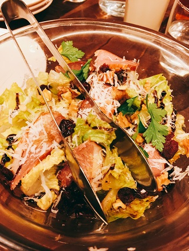

日期:2016/4/2
上週六逛完台北世貿的展覽後想說去附近一間好久沒吃的義大利餐廳吃飯，也是我的前東家，因為已經很久沒去，心裡想說那裡應該沒有認識的人了吧。。。結果就在我們走到門口的時候我看到了一個熟悉的身影，就是之前帶我的店長～～好久沒看到她了，覺得很開心又很驚喜，寒暄了幾句之後，剛好當時店長還有其他事要忙就先請旁邊的服務人員先帶我們入座。
迅速的點完餐後就等著美食上桌啦～～這間店在我離開後有重新整修過，整個風格都跟之前完全不一樣，我也比較喜歡現在這樣的風格XD
首先上桌的是飲料～～～我點的是野莓檸檬漾，顏色好漂亮喔～～看起來超夢幻的飲料，根本少女心噴發XDD
過沒多久我們的佛卡夏麵包也上桌囉～
很可愛的呈現方式，用印有商家名稱的小紙袋裝，放在木板上，搭配橄欖油食用
接著就是沙拉啦～～～我們點的是鴨胸水果沙拉，是新的菜色，而且好好吃～～生菜很新鮮，鴨胸吃起來軟嫩適中，還有搭配一些水果，吃起來酸酸甜甜，重點是分量也滿多的喔，不會有空虛感。

吃完沙拉喝了點湯後就是我最期待的披薩了!!!
點的是BBQ雞肉鳳梨披薩，是從我還在這邊上班的時候就最喜歡吃的口味之一，它跟夏威夷披薩有點像，而且吃薄脆口感的披薩，吃起來鹹鹹甜甜，搭配店家自製的BBQ醬，一送上桌簡直香氣逼人，口水都要留下來了～～
吃完披薩後就是主餐啦～在義大利大家通常只會把披薩當作是開胃點心而已，並不會當作主餐，但是在台灣因為大部分的人吃完披薩就會有飽足感，所以常常把披薩誤認為主食。
我們的主餐是義大利麵，點的是番茄海鮮口味，這邊的義大利麵煮的比較義式風，麵條的口感比較彈牙，會有吃到麵心的口感，海鮮番茄麵也是很受歡迎的口味之一喔～
所有美好的餐點都需要有可口的甜點來收尾才能算是一個完美的ending啊～～我們點的是雙人套餐，所以店家已經有搭配好兩款的甜點提供給客人享用，今天搭配的是奶油巧克力慕斯跟奶油草莓慕斯，奶油巧克力慕斯真的超～～好吃，也是我最喜歡的甜點之一，吃起來口感有點像冰淇淋帶有一點巧克力的苦味所以完全不會太甜，至於奶油草莓慕斯是新的甜點我就沒吃過了，雖然略遜一籌但還是很棒。
今天真的吃得很開心，重點是還有遇到熟人，其實這也是裝潢後我們第一次去吃，因為重新裝潢菜單也有做一些調整，覺得真得很棒～真心推廌喜歡義大利菜的朋友可以來試試看喔：）